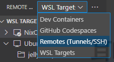
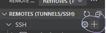
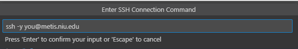
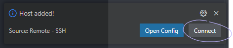
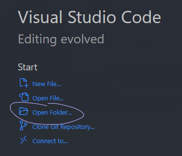

1. Introduction
Welcome! This book serves as an all-in-one crash course in utilizing Metis.
Metis (commissioned in September 2023) is a 32-node CPU/GPU hybrid cluster running Red Hat Enterprise Linux 8.x operating system. 1PB of shared disk is provided by a Cray ClusterStor E1000 storage server. Each compute node is an HPE DL 385 Gen 10+ V2 server equipped with:
- 2x AMD EPYC 7713 CPUs 2.0 GHz 64-core processors
- 251-1259 GB RAM, 1 x 4TB SSD scratch disk drives
- 1 x NVIDIA A100 GPU, Amper™ architecture, 40 GB RAM each card
- All 32 nodes are connected via a 200 Gbps Infiniband network
To learn more about Metis, you can see the METIS layout and specification.
Primary Purpose
The goal of this book is to allow faculty at NIU to hit the ground running with their research.
We want you to focus on completing your work - not getting the hardware to work.
This book will teach you the skills to help focus on writing your application from the ground up.
Additionally, should a step confuse you, the final product of every project example in this book can also be found in this book's repository.
Explored Use Cases
There are six use cases covered here, with increasing levels of control over Metis:
- Chapter 2.1 - Running a C++ project
- No additional configuration
- PBS only
- Chapter 2.2 - Running a CUDA project
- Loading CUDA via the
modulecommand - PBS only
- Loading CUDA via the
- Chapter 4.1 - Running a language not installed on Metis, such as Python 3.11
- Downloading a pre-built Docker Image with
pythonversion 3.11 installed - PBS with Docker via Podman
- Downloading a pre-built Docker Image with
- Chapter 4.2 - Running packages not installed on Metis with GPU passthrough
- Downloading a pre-built Docker Image with the requirements for CUDA
- Passing through GPUs to Docker
- PBS with Docker and NVIDIA Container Toolkit via Podman
- Chapter 4.3 - Running virtually any project using custom Docker Images
- Writing, building, and publishing your own Docker Image
- Passing through GPUs to Docker
- PBS with Docker and NVIDIA Container Toolkit via Podman
- Chapter 5.1 - SSH Automation
- Demonstrates programmatic submission of PBS jobs via SSH for the purpose of fitting Metis into existing systems.
Where Should I Read to?
Cases Where Docker May Not Be Needed
If your application is either of the following, you shouldn't use Docker.
- Native C, Go, or Python applications with pre-installed or no dependencies
- OpenMPI-based applications
If it's one of those two, chapters 2.1 and 2.2 will be of great use!
The following chapters may not be as useful, as they touch primarily on Docker.
Cases Where Docker Is Needed
If your application is any of the following, it's highly recommended to use Docker:
- Applications which require a different operating system
- Applications that are not pre-installed and easier to setup using docker than natively (consult with crcdhelpdesk@niu.edu)
If you only need CPU-based computation, chapters 2-2.2 and 4.1 will teach you everything you need.
If you need GPU passthrough or have a very complicated project, it is recommended to read this book in its entirety!
1.1. Connecting to Metis
The Metis cluster is easily accessible via the SSH protocol.
Each operating system has various possible SSH clients - we will be using the OpenSSH client, as it is pre-installed on most operating systems and very straightforward.
Windows 10 and 11
As of 2024, both Windows 10 and Windows 11 have the OpenSSH client pre-installed. If you don't have it installed, update your operating system using the Windows Updater.
To connect, open either Windows PowerShell or Command Prompt, and run the following:
PS C:\...\> ssh you@metis.niu.edu
When prompted, enter your temporary password.
On your first login, you will be prompted to create a new password. Ensure that it's something memorable, but very secure!
Then, close your session:
[you@metis ~]$ exit
And re-login to test your new password:
PS C:\...\> ssh you@metis.niu.edu
Linux and MacOS
Most major distributions and the latest versions of MacOS have the OpenSSH client installed.
Run the following:
$ ssh you@metis.niu.edu
When prompted, enter your temporary password.
On your first login, you will be prompted to create a new password. Ensure that it's something memorable, but secure!
Then, close your session:
[you@metis ~]$ exit
And re-login to test your new password:
$ ssh you@metis.niu.edu
1.2. Remote Workspaces in VSCode
If you encounter issues, see the official VSCode documentation!
This guide is primarily applicable to Windows users, as the graphical integrated development enviroment it provides can make development much easier.
However, development on Metis is also possible and easy, as the majority of popular terminal-based editors are preinstalled on the login nodes:
Similarly, the two most popular build tools are also installed:
Installing VSCode and Remote Explorer
If you haven't already, first install Visual Studio Code. Note that Visual Studio Code and Visual Studio are not the same thing.
Next, navigate to the Extensions tab, and install the Remote Development extension by Microsoft. Then, restart VSCode.
Adding Metis as a Remote Host
On the left panel, click on Remote Explorer:
Then, make sure you are in the Remotes (Tunnel/SSH) section:

Next, create a new SSH host:

This will prompt you for your SSH command. It is slightly easier to add the -y flag, as seen below:

It will then as you where to save your SSH configuration. It doesn't really matter which you pick, but the option in your Users folder is ideal.
After choosing a location, you'll see a prompt in the bottom right, on which you should click Connect:

This will open a new VSCode window, where you are now connected to Metis graphically!
Adding a Folder
When this new window opens, you can click the Open Folder option to choose your first folder:

It's recommended you start with /home/you.
If you've been allocated a project, you may also want to open /lstr/sahara/your_project.
2. Basic Metis Usage
This first chapter will provide two into-the-fire projects that will teach you the core systems of Metis. This will be done through a simple C++ project, followed by an optimized version written with CUDA.
It's recommended to have a minimal knowledge of C++, CUDA, and Linux / Bash. If you haven't used any of these three before, or if it's been a while, linked below are some introductory resources:
These next two chapters lay the foundational skills needed to use the advanced techniques in the following chapters, and it is highly recommended that you read them before proceeding!
Overview of the Chapters
Chapter 2.1: C++ on Metis
- Goals: Familiarize with basic commands and job submission on Metis.
- C++ Boilerplate: Create and run a basic "Hello, World" C++ program with computational loops.
- PBS Basics: Write a PBS job script to run your C++ program on compute nodes.
- Execution: Compile and run the C++ program locally and via PBS.
- Outcome: You will be able to understand job submission, the PBS script structure, and basic module commands.
Chapter 2.2: Building a CUDA Project from the Ground Up
- Goals: Learn to use CUDA for GPU programming on Metis.
- CUDA Boilerplate: Write a CUDA program to achieve the same task as in Chapter 1.1 but using GPU acceleration.
- CUDA Modules: Install and use the CUDA compiler (nvcc) with module commands.
- Execution: Compile and run your CUDA program, observing performance improvements.
- PBS for CUDA: Adapt the PBS script to load CUDA modules and compile with nvcc.
- Outcome: You will be able to leverage CUDA for faster computation and understand the structure of both CUDA programs and PBS scripts.
2.1. Building a C++ Project from the Ground Up
Associated CRCD Documentation: Project Example and PBS
You can find the code mentioned in this chapter in this book's repository!
This introductory project will teach you the absolute minimal nessecary information to create a basic C++ project on the Metis supercomputer.
Before we tackle more robust and complex technologies such as CUDA or OpenMPI, our goal is to familiarize ourselves with Metis before abstracting and building upon our understanding.
We'll instead opt to start with the most basic of programs - "Hello, World" (with, of course, a computationally intensive task) - to get started!
Goals
- Get a feel for the
modulecommands - Get a feel for the PBS Professional job submission system
- Understand the layout of a
.pbsjob script file - Get a feel for the
qsubcommand
C++ Boilerplate
First, let's start by creating a folder for our projects, then a folder for C++, and finally a folder for this project:
$ mkdir /lstr/sahara/<your_project>/<you>
$ mkdir /lstr/sahara/<your_project>/<you>/cpp
$ mkdir /lstr/sahara/<your_project>/<you>/cpp/cpp_on_metis
$ cd /lstr/sahara/<your_project>/<you>/cpp/cpp_on_metis
Let's start by creating a main.cpp file with the following contents:
#include <iostream>
int main () {
// Say hello to the user
std::cout << "Hello, Metis!" << std::endl;
// Initialize our counter variables
unsigned long long int counter = 0;
unsigned long long int number_of_divisible_by_two = 0;
unsigned long long int number_of_divisible_by_three = 0;
unsigned long long int number_of_divisible_by_five = 0;
// First, iterate through a 3D grid to get to our block
for ( int grid_z = 0; grid_z < 1000; grid_z++ ) {
for ( int grid_y = 0; grid_y < 100; grid_y++ ) {
for ( int grid_x = 0; grid_x < 100; grid_x++ ) {
// Second, iterate through the 3D block
for ( int block_z = 0; block_z < 10; block_z++ ) {
for ( int block_y = 0; block_y < 10; block_y++ ) {
for ( int block_x = 0; block_x < 10; block_x++ ) {
counter += 1;
if ( counter % 2 == 0 )
number_of_divisible_by_two += 1;
if ( counter % 3 == 0 )
number_of_divisible_by_three += 1;
if ( counter % 5 == 0 )
number_of_divisible_by_five += 1;
}
}
}
}
}
}
// Provide our results to the user
std::cout << std::endl
<< "- Numbers divisible by two: " << number_of_divisible_by_two << std::endl
<< "- Numbers divisible by three: " << number_of_divisible_by_three << std::endl
<< "- Numbers divisible by five: " << number_of_divisible_by_five << std::endl;
return 0;
}
This program does two things - it says hello to the user, and then takes count of the numbers divisible by 2, 3, and 5 from 0 up to 10 billion.
This is done with multiple nested loops - the reason for which will be explained, and the code optimized, in the following chapter on CUDA.
For now, what's apparent and important is that this is a computationally intensive task!
Next, let's build and run this code. By default, Metis users have GCC and G++ (version 11.3.0) preinstalled, which we will now use:
$ g++ -o hello_world main.cpp
$ ./hello_world
The calculation should take 23 seconds, after which we should see our results! However, it will run faster on the compute nodes, and you can allocate more resources. It will run exponentially faster when employing CUDA or OpenMPI, which we will touch on in the next chapter!
Getting Started with PBS
We are not currently making full use of Metis with this current setup. What we just ran our code on is called the login node, which has nowhere near the amount of computational power that is available to the compute nodes, which are where computationally intensive or time-consuming programs should be run.
But how do we do so?
Metis has many users, and each user may have various types of programs, each program with varying hardware requirements. As such, Metis uses a resource manager and job scheduling system by Altair, called PBS Professional.
In order to make use of this program, we must describe to the system what we need from it, which could be things such as:
- CPU cores
- CPU count
- RAM size
- GPU chunks
- Estimated runtime
...and more.
To do so, we use a PBS script file - a bash script with embedded PBS directives.
Let's get started by creating a run.pbs file with the following contents:
#!/bin/bash
#PBS -N hello_world
#PBS -j oe
#Note - on Metis
# Nchunks<=32, for GPU chunks
# Nchunks<=4096/Ncpus for CPU-only chunks
# (run 'shownodes' command to find the number of free cpus)
# Ncpus<=128, the total number of CPUs per node is 128
# NPmpi<=Ncpus, the total number of CPUs allocated for MPI tasks,
# request NPmpi=Ncpus for non-OPENMP jobs
# Ngpus==1, the total number of GPUs per node is 1
# X<=256, 28 of 32 Metis modes have 256 GB of RAM
# special jobs can request up to 1024 GB of RAM (4 nodes)
#
# Below, we request two chunks;
# each chunk needs 8 CPUs, 1 MPI processes, 1 GPU card, and 2 GB RAM
#PBS -l select=1:ncpus=8:mpiprocs=1:ngpus=1:mem=251gb
#PBS -l walltime=00:15:00
# When to send a status email ("-m abe" sends e-mails at job abort, begin, and end)
#--PBS -m ae
#--#PBS -M account@niu.edu
# Navigate to our working directory
PROJECT_DIRECTORY=/lstr/sahara/<your_project>/<you>/cpp/cpp_on_metis
echo "The job's working directory is $PROJECT_DIRECTORY"
cd $PROJECT_DIRECTORY
# Install GCC
echo ""
echo "Loading GCC..."
module purge; module load gcc/gcc-12.3.0
module list
echo "Done!"
# Compile our code
echo ""
echo "Compiling code..."
g++ main.cpp -o hello_world
echo "Done!"
# Run our binary
echo ""
echo "Executing binary..."
./hello_world
echo "Done!"
# Clean up our binary
rm ./hello_world
Before we move on, let's dissect what this does.
1. #!/bin/bash
2.
3. #PBS -N hello_world
4. #PBS -j oe
5.
6. #Note - on Metis
7. # Nchunks<=32, for GPU chunks
8. # Nchunks<=4096/Ncpus for CPU-only chunks
9. # (run 'shownodes' command to find the number of free cpus)
10. # Ncpus<=128, the total number of CPUs per node is 128
11. # NPmpi<=Ncpus, the total number of CPUs allocated for MPI tasks,
12. # request NPmpi=Ncpus for non-OPENMP jobs
13. # Ngpus==1, the total number of GPUs per node is 1
14. # X<=256, 28 of 32 Metis modes have 256 GB of RAM
15. # special jobs can request up to 1024 GB of RAM (4 nodes)
16. #
17. # Below, we request two chunks;
18. # each chunk needs 8 CPUs, 1 MPI processes, 1 GPU card, and 2 GB RAM
19. #PBS -l select=1:ncpus=8:mpiprocs=1:ngpus=1:mem=251gb
20. #PBS -l walltime=00:15:00
21.
22. # When to send a status email ("-m abe" sends e-mails at job abort, begin, and end)
23. #--PBS -m ae
24. #--#PBS -M account@niu.edu
...
Lines starting with #PBS are not comments, rather, they are PBS-specific commands!
The following lines are important to understand:
-
Line 1 is a shebang which specifies that the file's commands are to be interpreted by bash.
-
Line 3 specifies the name of our file.
-
Line 19 specifies the hardware requirements for our job
To learn more about specifying hardware requirements, see Chapter 5.4.1.
-
Line 20 specifies the estimated runtime of our job
-
Lines 23 and 24 specify options for recieveing emails regarding various events
Adding a sends mail on abort. Adding b sends mail on start. Adding e sends mail on end.
To learn more about recieving emails, see Chapter 5.4.1.
-
#PBS -j <n | oe>orqsub -j <n | oe>Specifies whether the standard error stream should be merged with the standard output stream.
Specifying
oemeans that bothstderrandstdoutwill be in the same output file.Specifying
n, or not specifying at all, means they will be in different files.$ qsub -j n run.pbs 20000.cm $ ls hello_world.o20000 hello_world.e20000 -
#PBS -m <n | a*b*e*>orqsub -m <n | a*b*e*>Specifies when mail about your job should be sent, with the following key:
- To send mail when it aborts, add
a - To send main when it begins, add
b - To send main when it ends, add 'e'
- To not send mail, specify
nor do not use this directive.
- To send mail when it aborts, add
For this job, none of this needs to be modified. The next section, however, will need to be:
...
26. # Navigate to our working directory
27. PROJECT_DIRECTORY=/lstr/sahara/<your_project>/<you>/cpp/cpp_on_metis
28. echo "The job's working directory is $PROJECT_DIRECTORY"
29. cd $PROJECT_DIRECTORY
...
Be sure to replace any instances on line 27 of <your_project> and <you> with your Metis project and username!
The reason for this only becomes relevant if you have interest in creating non-C++ projects or automating your job submission, so it is worth noting that you can replace /lstr/sahara/<your_project>/<you>/cpp/cpp_on_metis with $PBS_O_WORKDIR if you would like. This will be populated with where the job is run from.
Next, we will familiarize ourselves with the module commands, which are used on lines 31-36:
...
31. # Install GCC
32. echo ""
33. echo "Loading GCC..."
34. module purge; module load gcc/gcc-12.3.0
35. module list
36. echo "Done!"
...
The module commands are somewhat akin to a package manager, allowing you to load packages ("modulefiles") into your environment.
Unlike you, the compute node does not have gcc pre-installed. So to make it available to the compute node, we must install it, done in the following fashion:
- Line 34 clears all packages with
module purge, then installs GCC withmodule load gcc/gcc-12.3.0. - Line 35 lets you see what's currently installed with
module list.
This process for installing a package is the same on both the login and compute nodes. To see what packages are available to you, you can run module av. To narrow your search by a specific key word, use module av <keyword>.
...
38. # Compile our code
39. echo ""
40. echo "Compiling code..."
41. g++ main.cpp -o hello_world
42. echo "Done!"
43.
44. # Run our binary
45. echo ""
46. echo "Executing binary..."
47. ./hello_world
48. echo "Done!"
49.
50. # Clean up our binary
51. rm ./hello_world
...
The remaining lines are what you are accustomed to, they use the same build command from before, then run the binary, and finally clean up any artifacts.
Launching a Job with PBS
We're ready to go! All that's left is to start our job, which can be done easily with the following command:
$ qsub run.pbs
The output will look something like this:
18681.cm
This tells us the ID number of our job. Wait around 30 seconds for the job to finish, and list the contents of the directory!
$ ls
hello_world.o18681 main.cpp run.pbs
Reading the output from our job:
$ cat hello_world.o18681
The job's working directory is /lstr/sahara/<your_project>/<you>/cpp/cpp_on_metis
Loading GCC...
Currently Loaded Modulefiles:
1) gcc/gcc-12.3.0
Done!
Compiling code...
Done!
Executing binary...
Hello, Metis!
- Numbers divisible by two: 5000000000
- Numbers divisible by three: 3333333333
- Numbers divisible by five: 2000000000
Done!
Closing Thoughts
Congratulations! You've successfully launched your first job on the Metis supercomputer.
This is an impressive achievement. Those who are satisfied with the performance of their programs and are comfortable with only using the C family may even be able to stop here.
However, Metis is capable of much, much more.
In the next chapter, we will discuss utilizing CUDA to weaponize the power of graphics card programming to drastically reduce the computation times of our programs, as well as learning more about the module and PBS-related commands.
2.2. Building a CUDA Project from the Ground Up
Associated CRCD Documentation: Project Example and PBS
You can find the code mentioned in this chapter in this book's repository!
The next part of this introductory chapter will teach you how to build, compile, and run a CUDA program from the ground up on Metis.
CUDA stands for Compute Unified Device Architecture, and it is proprietary NVIDIA-distributed software that allows developers to perform matrice-based operations at unbelievable speeds using the heavily optimized CUDA cores found only on NVIDIA GPUs.
This chapter will teach you how to run CUDA code on Metis, but it will not teach you how to write it!
There are many fantastic resources on how to write it, some of which are linked below:
- (NVIDIA) An Even Easier Introduction to CUDA
- (cuda-tutorial) Introduction to CUDA
- (NVIDIA) CUDA Runtime API Reference
- (NVIDIA) CUDA Driver API Reference
Goals
- Learn how to use the
modulecommands on the login node - Learn how to use the
qstatcommand to view a running or completed job
CUDA Boilerplate
If you did not in the previous section, start by creating a folder for our projects, then a folder for CUDA projects, and finally a folder for this project:
$ mkdir /lstr/sahara/<your_project>/<you>
$ mkdir /lstr/sahara/<your_project>/<you>/cuda
$ mkdir /lstr/sahara/<your_project>/<you>/cuda/cuda_on_metis
$ cd /lstr/sahara/<your_project>/<you>/cuda/cuda_on_metis
Let's start by creating a main.cu file with the following contents:
#include <iostream>
/// A kernel function designed to calculate the number of
/// numbers divisible by two, three, and five
///
/// # Arguments
/// * `d_number_of_divisible_by_two` - The number of numbers divisible by two
/// * `d_number_of_divisible_by_three` - The number of numbers divisible by three
/// * `d_number_of_divisible_by_five` - The number of numbers divisible by five
__global__ void calculate(
unsigned long long int * d_number_of_divisible_by_two,
unsigned long long int * d_number_of_divisible_by_three,
unsigned long long int * d_number_of_divisible_by_five
) {
int grid_x = blockIdx.x;
int grid_y = blockIdx.y;
int grid_z = blockIdx.z;
int block_x = threadIdx.x;
int block_y = threadIdx.y;
int block_z = threadIdx.z;
unsigned long long local_counter =
(grid_z * 100 * 100 * 10 * 10 * 10) +
(grid_y * 100 * 10 * 10) +
(grid_x * 10 * 10) +
(block_z * 10 * 10) +
(block_y * 10) +
block_x + 1;
unsigned long one = 1;
if (local_counter % 2 == 0) {
atomicAdd(d_number_of_divisible_by_two, one);
}
if (local_counter % 3 == 0) {
atomicAdd(d_number_of_divisible_by_three, one);
}
if (local_counter % 5 == 0) {
atomicAdd(d_number_of_divisible_by_five, one);
}
}
int main() {
// Say hello to the user
std::cout << "Hello, Metis!" << std::endl;
// Host variables
unsigned long long int h_number_of_divisible_by_two = 0;
unsigned long long int h_number_of_divisible_by_three = 0;
unsigned long long int h_number_of_divisible_by_five = 0;
// Device variables
unsigned long long int * d_number_of_divisible_by_two;
unsigned long long int * d_number_of_divisible_by_three;
unsigned long long int * d_number_of_divisible_by_five;
// Allocate memory on the device with the correct sizing
cudaMalloc( &d_number_of_divisible_by_two, sizeof(unsigned long long int) );
cudaMalloc( &d_number_of_divisible_by_three, sizeof(unsigned long long int) );
cudaMalloc( &d_number_of_divisible_by_five, sizeof(unsigned long long int) );
// Copy the memory from the host to the device
cudaMemcpy( d_number_of_divisible_by_two, &h_number_of_divisible_by_two,
sizeof(unsigned long long int), cudaMemcpyHostToDevice );
cudaMemcpy( d_number_of_divisible_by_three, &h_number_of_divisible_by_three,
sizeof(unsigned long long int), cudaMemcpyHostToDevice );
cudaMemcpy( d_number_of_divisible_by_five, &h_number_of_divisible_by_five,
sizeof(unsigned long long int), cudaMemcpyHostToDevice );
// Define our grid's dimensions
dim3 gridDim(100, 100, 10);
// Define each block's dimensions
dim3 blockDim(10, 10, 10);
// Run our calculation
calculate<<<gridDim, blockDim>>>(d_number_of_divisible_by_two, d_number_of_divisible_by_three, d_number_of_divisible_by_five);
cudaDeviceSynchronize();
// Copy the memory back to our machine
cudaMemcpy(&h_number_of_divisible_by_two, d_number_of_divisible_by_two, sizeof(unsigned long long int), cudaMemcpyDeviceToHost);
cudaMemcpy(&h_number_of_divisible_by_three, d_number_of_divisible_by_three, sizeof(unsigned long long int), cudaMemcpyDeviceToHost);
cudaMemcpy(&h_number_of_divisible_by_five, d_number_of_divisible_by_five, sizeof(unsigned long long int), cudaMemcpyDeviceToHost);
// Provide our results to the user
std::cout << std::endl
<< "- Numbers divisible by two: " << h_number_of_divisible_by_two << std::endl
<< "- Numbers divisible by three: " << h_number_of_divisible_by_three << std::endl
<< "- Numbers divisible by five: " << h_number_of_divisible_by_five << std::endl;
// Free the memory
cudaFree(d_number_of_divisible_by_two);
cudaFree(d_number_of_divisible_by_three);
cudaFree(d_number_of_divisible_by_five);
return 0;
}
This program does the exact same thing as the previous section, with one key difference - it makes use of the CUDA runtime.
Instead of using indicied loops, we run our program using the compute systems of CUDA.
- Our outer loop's dimensions are replaced by the CUDA (thread) block grid, 1-3D grid containing (thread) block.
- Our inner loop's dimensions are replaced by the CUDA thread block, which are a 1-3D block containing the threads our kernel function will be executed on.
In our program, we use the maximum number of dimensions, effectively creating a 6D matrix. Because each each block is aware of its coordinates on the grid it lies on, and each thread the coordinates of the block it sits in, we can use sneaky math to calculate which number the old "counter" variable each of the ten billion threads translates to.
If you would like to learn more about CUDA, the resources in the introductory section of this paragraph are greatly recommended.
Loading Modules on the Login Node
However, unlike our previous project which used g++, the CUDA compiler, nvcc, is not pre-loaded.
To load it, we will use the module commands mentioned briefly in the previous section. The module system loads and unloads an evironment for specific application packages not part of the operating system.
First, let's list the modules related to cuda with the following command:
$ module av cuda
-------------------------------------------------- /etc/modulefiles --------------------------------------------------
cuda/cuda-7.5 cuda/cuda-8.0 cuda/cuda-11.5 cuda/cuda-11.8 cuda/cuda-11.8-rocky8 cuda/cuda-12.2
We see a variety of versions. For the sake of this guide, we will be using cuda/cuda-11.8.
Next, let's clean up our modules, and load CUDA:
$ module purge
$ module load cuda/cuda-11.8
$ module list
Currently Loaded Modulefiles:
1) cuda/cuda-11.8
Finally, we're ready to go! Let's compile and run our program:
$ nvcc -o hello_world main.cu
$ ./hello_world
Hello, Metis!
- Numbers divisible by two: 50000000
- Numbers divisible by three: 33333333
- Numbers divisible by five: 20000000
You will notice a nearly instantaneous completion time of 0.5 seconds.
Such is the power of graphical programming!
Launching a CUDA Program with PBS
For the most part, the run.pbs file will look similar to the version from the previous chapter.
Create a run.pbs file with the following contents:
#!/bin/bash
#PBS -N hello_world_cuda
#PBS -j oe
#Note - on Metis
# Nchunks<=32, for GPU chunks
# Nchunks<=4096/Ncpus for CPU-only chunks
# (run 'shownodes' command to find the number of free cpus)
# Ncpus<=128, the total number of CPUs per node is 128
# NPmpi<=Ncpus, the total number of CPUs allocated for MPI tasks,
# request NPmpi=Ncpus for non-OPENMP jobs
# Ngpus==1, the total number of GPUs per node is 1
# X<=256, 28 of 32 Metis modes have 256 GB of RAM
# special jobs can request up to 1024 GB of RAM (4 nodes)
#
# Below, we request two chunks;
# each chunk needs 8 CPUs, 8 MPI processes, 1 GPU card, and 16 GB RAM
#PBS -l select=1:ncpus=8:mpiprocs=1:ngpus=1:mem=251gb
#PBS -l walltime=00:15:00
# When to send a status email ("-m abe" sends e-mails at job abort, begin, and end)
#--PBS -m ae
#--#PBS -M account@niu.edu
# Navigate to our working directory
PROJECT_DIRECTORY=/lstr/sahara/<your_project>/<you>/cuda/cuda_on_metis
echo "The job's working directory is $PROJECT_DIRECTORY"
cd $PROJECT_DIRECTORY
# Install GCC
echo ""
echo "Loading CUDA"
module purge; module load cuda/cuda-11.8; module load gcc/gcc-11.3.0
module list
echo "Done!"
# Compile our code
echo ""
echo "Compiling code..."
nvcc -o hello_world main.cu
echo "Done!"
# Run our binary
echo ""
echo "Executing binary..."
./hello_world
echo "Done!"
# Clean up our binary
rm ./hello_world
There are a few notable differences.
- Our project name is
hello_world_cudainstead ofhello_world. - Our project directory is
.../hello_world_cudainstead of.../hello_world. - Instead of loading GCC, we loaded CUDA (
module load cuda/cuda-11.8). - Instead of compiling with G++ (
g++ -o hello_world main.cpp), we compiled with CUDA (nvcc -o hello_world main.cu).
Be sure to replace any instances of <your_project> and <you> with your Metis project and username!
Launching our Job with PBS
We're ready to go! All that's left is to start our job, which can be done easily with the following command:
$ qsub run.pbs
The output will look something like this:
18681.cm
This tells us the ID number of our job. Wait around 30 seconds for the job to finish, and list the contents of the directory!
$ ls
hello_world_cuda.o18681 main.cu run.pbs
Reading the output from our job:
$ cat hello_world.o18681
The job's working directory is /home/<your_account_username>/projects/cuda/cuda_on_metis
Loading GCC...
Currently Loaded Modulefiles:
1) gcc/gcc-12.3.0
Done!
Compiling code...
Done!
Executing binary...
Hello, Metis!
- Numbers divisible by two: 5000000000
- Numbers divisible by three: 3333333333
- Numbers divisible by five: 2000000000
Done!
It's also worth noting that you can use the qstat command to view the status of a job:
$ qstat -x 18681
Job id Name User Time Use S Queue
---------------- ---------------- ---------------- -------- - -----
18681.cm hello_world z1994244 00:00:02 F short
The -x flag means you will recieve output even if the job has concluded.
The documentation for this command, as well as qsub, can be found below:
There are also other useful commands such as qdel (terminates a job):
Closing Thoughts
Once again, congratulations! You have just harnessed the power of the NVIDIA hardware on Metis.
The boilerplate from this project will be enough to get almost any CUDA project up and running. For those who recieve enough of a performance improvement to satisfy your needs, you may be able to stop here.
For tasks that require even further optimization, Metis supports OpenMPI, a message passing interface which allows for massively parallel computation across multiple CPUs/Metis nodes.
Metis has modules containing GCC, CUDA, and OpenMPI for your convenience:
$ module av openmpi
-------------------- /etc/modulefiles ---------------------
openmpi/openmpi-1.8.8-gcc-11.4.0
openmpi/openmpi-4.0.7-gcc-9.5.0-cuda-11.8
openmpi/openmpi-4.1.1-gcc-11.3.0-cuda-11.8
openmpi/openmpi-4.1.5-gcc-8.5.0-cuda-11.8
openmpi/openmpi-4.1.5-gcc-11.4.0-cuda-11.8
openmpi/openmpi-4.1.5-gcc-12.3.0-cuda-12.2
openmpi/openmpi-4.1.6-gcc-11.4.0-cuda-11.8
Using a combination of both OpenMPI for coordinating large-scale tasks across many processors and CUDA for handling tasks best accelerated by GPU programming will allow you to fully harness the hardware of Metis.
3. User Environment Customization/Virtualization on Metis
Podman + Docker vs Singularity/Apptainer + Docker vs Conda vs Modulefiles
Metis provides several technologies to encapsulate environments and manage software dependencies. Each of these tools—Podman, Docker, Singularity/Apptainer, Conda, and Modulefiles—has different strengths and weaknesses, depending on your use case.
Any technology marked with a "⭐" is a strong candidate in its given feature.
Comparison Chart
| Feature | Podman + Docker | Singularity/Apptainer | Conda | Modulefiles |
|---|---|---|---|---|
| Use Case | ⭐ General development, CI/CD, image availability | ⭐ HPC environments, scientific computing | Managing isolated software environments | Dynamic loading of software on HPC clusters |
| Image/Package Repository | ⭐ Docker Hub (extremely large and varied) | Smaller ecosystem, focus on reproducibility | Anaconda repository (⭐ only if using Python or R) | Pre-installed software for the HPC cluster |
| Security | Rootless operation (Podman) | ⭐ High security in multi-user environments | No OS-level isolation | ⭐ Tied to user permissions on HPC |
| Integration with HPC | Limited, requires config | Optimized for HPC environments | Limited, not designed for HPC | Native integration with HPC systems |
| Ease of Use in HPC | Very easy, but requires some minimal configuration | Tedious but straightforward to work with | Simple for general use (but not HPC-optimized) | ⭐ Extremely easy to use, but requires cluster-specific knowledge |
3.1 Pros/Cons: Podman + Docker and Singularity/Apptainer + Docker
To learn more about Podman, see the official Podman Documentation, or a great beginner's tutorial!
To learn more about Apptainer, see the official Apptainer Documentation, or a comprehensive tutorial!
Metis has both Podman and Singularity installed. Both are software designed to allow non-root users to run containers on systems like Metis, where this is the case.
Podman is designed to effectively be a drop-in replacement for Docker on non-root systems, while Singularity is a tool specifically designed for HPC environments with performance, reproducibility, and security in mind.
Although this documentation does not cover Singularity, it is a very powerful tool that should be considered if you are looking to squeeze the maximum performance out of Metis.
Podman + Docker
Podman and Docker are containerization platforms that allow users to run and manage containers in isolated environments.
Pros:
- Large Ecosystem: Docker has an extensive library of images on Docker Hub.
- Rootless Operation (Podman): Podman is rootless by default, improving security without compromising functionality.
- Versatile: Ideal for general development, CI/CD pipelines, and application isolation.
Cons:
- Limited HPC Integration: Requires extra configuration to integrate with HPC systems, especially regarding MPI.
- Overhead: Containerization can add overhead compared to native execution, especially for complex MPI-based workflows.
Singularity/Apptainer
Singularity, now rebranded as Apptainer, is a containerization technology specifically designed for HPC environments. Apptainer allows users to encapsulate applications and their dependencies in containers that are highly portable and optimized for performance in multi-user systems.
Pros:
- Native OpenMPI Support: Singularity/Apptainer handles MPI seamlessly, outperforming Docker in HPC scenarios.
- Reproducibility: Ensures consistent performance and results, vital in scientific computing.
- Security: Designed for multi-user environments, ensuring other users can't interfere with your containers.
Cons:
- Smaller Ecosystem: Fewer available container images and less community support compared to Docker.
- Less Flexibility: Its focus on reproducibility can make certain application deployments more challenging.
- Complex Local Setup: Initial setup on local machines can be tricky, especially compared to Docker/Podman.
3.2. Pros/Cons: Conda
To learn more about Conda, see CRCD's documentation!
Conda is a popular package and environment management tool, widely used in scientific computing for managing Python and R environments. It allows users to install multiple versions of software and switch between them without affecting the system’s main environment.
Pros:
- Package Management: Supports a wide array of libraries, including Python, R, and C/C++ packages.
- Cross-platform: Works on most operating systems and is widely adopted in data science and machine learning communities.
- Virtual Environment Management: Allows easy creation of isolated virtual environments.
Cons:
- Not Containerized: Unlike Docker and Singularity, Conda environments are not isolated at the OS level, leading to potential conflicts with system libraries.
- Not HPC-optimized: While it works in HPC environments, it's not specifically designed for them. It lacks the strong security and performance optimizations of container-based solutions.
- Heavy on Disk: Conda environments can become quite large, consuming significant disk space.
3.3. Pros/Cons: Modulefiles
To learn more about Modulefiles or to find links to CRCD's documentation, see Chapter 6.3!
Environment Modules (or Modulefiles) are a system for dynamically modifying user environments via modulefiles. They are heavily used in HPC environments to load software environments on-demand without needing root privileges.
Pros:
- Lightweight: No overhead from containerization.
- HPC Optimized: Designed specifically for HPC environments, often with pre-built software optimized for the specific cluster. Easily the most optimized technology.
- Flexible: Allows for loading different software versions, easy to use and understand in HPC.
Cons:
- Not Portable: Modules are often tightly coupled to the cluster’s software stack, making them difficult to reproduce elsewhere.
- Manual Management: Requires explicit loading/unloading, making it less automated compared to container technologies.
- Complex and Administrator Dependent: You may need administrator intervention to add or modify system modules.
Using Podman + Docker on Metis
In this chapter, we will dive deep into Docker and PBS techniques, expanding on the foundational knowledge covered in Chapters 2.1 and 2.2.
We'll explore how to combine these techniques to create a robust workflow for your projects on Metis, including handling custom Docker images, leveraging GPU acceleration, and managing complex dependencies.
Overview of the Chapters
Chapter 4.1: Using Pre-Made Docker Images
- Goals: Understand the limitations of Metis modulefiles and learn how to circumvent them using Docker.
- Problem: Some software isn't available on Metis, creating modulefiles can be time-consuming or impossible due to custom dependencies
- Solution: Use Docker (via Podman) to run custom applications.
- Outcome: You will be able to run custom software avoiding the limitations of the Metis environment
Chapter 4.2: Using GPU Acceleration with Docker
- Goals: Learn how to enable GPU passthrough in Docker containers on Metis.
- Problem: GPUs are not accessible in Docker by default, and additional steps are required to set up NVIDIA drivers and CUDA.
- Solution: Configure Podman with specific flags and use NVIDIA's CUDA-enabled Docker images.
- Outcome: You will be able to leverage GPU acceleration for your Dockerized applications, significantly boosting performance.
Chapter 4.3: Creating Your Own Docker Base Images
- Goals: Gain the skills to create custom Docker images tailored to your project’s needs.
- Problem: Pre-made Docker images may not always meet the specific requirements of your project.
- Solution: Learn the basics of writing Dockerfiles, building custom images, and publishing them to public repositories.
- Outcome: You will be able to create, customize, and share Docker images, enabling a flexible and reproducible environment for your work.
4.1. Using Pre-Made Docker Images
Associated CRCD Documentation: PBS
You can find the code mentioned in this chapter in this book's repository!
We will first begin by using a language which is not among the modules which Metis provides, Python 3.11.
In actuality, Metis does offer Python, as seen below:
$ module av python
-------------------- /etc/modulefiles ---------------------
python/python-3.9.10 python/python-3.12.4
...but, at the time of writing this, it does not have Python 3.11, which is among the most commonly used versions.
So, how do we fix this?
Well, we ourselves can't fix the global modulefiles on Metis, which means under normal circumstances, we would have to reach out to Metis staff to have the module fixed - something that takes away from both your own time and the time of the Metis staff.
You are able to define your own modulefiles, but this is a time consuming task, and it can't solve everything.
Goals
- Learn how to use Podman and Docker
- Learn how to install dependencies via Podman's CLI
- Learn how to use Podman in a PBS script file
- Learn how to kill Podman to avoid uptime emails and alerts
The Problem
Modulefiles struggle or are outright impossible to create with any of the following cases:
- Packages which can only run on certain operating systems, and specific versions of those operating systems
- Packages which have dense dependency trees
- Packages which have circular dependencies
- Packages which need elevated permissions
- Packages with long build times, where a distributed binary may be preferred
- Closed-source or unfree packages (which are very common in machine learning!)
- Huge numbers of dependencies
This isn't to say it's impossible to manually build every single dependency for your project, and also include them manually.
However, this is an extremely time-consuming process, and time spent doing this will only take away from your core work.
Dependency installation should be a matter of lines, not weeks.
The Solution
Docker, an extremely powerful containerization and encapsulation tool that allows developers to define virtual machines with a level of granularity rarely found in modern computing. Docker allows you to select an operation system as a base, install packages and libraries, and define run behaviour.
We will be using an overlay on Docker called Podman. It allows us to use Docker containers despite not having elevated permissions on Metis. Understanding of Podman isn't required - all Docker commands can have docker replaced with podman (or in our case, /bin/podman).
If you haven't already, create your projects directory, a new directory for Docker projects, and finally a directory for this project:
$ mkdir /lstr/sahara/<your_project>/<you>
$ mkdir /lstr/sahara/<your_project>/<you>/docker
$ mkdir /lstr/sahara/<your_project>/<you>/docker/premade_image
$ cd /lstr/sahara/<your_project>/<you>/docker/premade_image
Next, let's create a main.py file with the following contents:
print( "Hello, Metis!" )
Now, how do we get Docker to run this file?
For your own projects, you can search the Docker Hub for programming languages, software, and more. You can also use a base image like ubuntu:22.04 or debian:bookworm, which contain nothing but the operating system with no additional packages or programming languages.
From there, you can use the exec command to install the languages or packages with that operating system's respective package manager. We will go over the usage of the exec command with examples shortly!
We'll start by downloading and running a Docker Image, which will be built on the Debian operating system version 12.6 "Bookworm", and include Python 3.11.9.
Note: If you see something like ERRO[0000] cannot find UID/GID for user z1994244: no subuid ranges found for user "z1994244" in /etc/subuid - check rootless mode in man pages., it's okay! This error sometimes occurs the first time you run a command, and if it does, simply wait a few seconds and run it again.
Downloading and starting our container:
$ /bin/podman run \
-v ./.:/home \
-w /home \
--name python_container \
-t -d \
python:3.12.5-bookworm
WARN[0000] Network file system detected as backing store. Enforcing overlay option `force_mask="700"`. Add it to storage.conf to silence this warning
f258979e09d0923ebb815b0b0baae9ae9cb2de18ace02a4aa282920c673073d9
The first line with the warning can be safely ignored. It's likely that by the time you are reading this, it's been silenced.
Next, let's run our Python script!
$ /bin/podman exec python_container python3 main.py
...
Hello, World!
Congratulations! You've just run a version of Python that's not installed on Metis at all. But, what if our Python script needed some dependencies?
Overwrite the main.py file with the following contents:
import numpy as np
print( "Hello, Metis!" )
If we try to run our script again, we get an error:
$ /bin/podman exec python_container python3 main.py
...
Traceback (most recent call last):
File "/home/main.py", line 1, in <module>
import numpy as np
ModuleNotFoundError: No module named 'numpy'
Let's create our Python virtual environment, and install numpy using the exec command! Run the following:
$ /bin/podman exec python_container python -m venv .venv
$ /bin/podman exec python_container .venv/bin/pip install numpy
Running our script again:
$ /bin/podman exec python_container .venv/bin/python3 main.py
...
Hello, Metis!
Nicely done! Lastly, let's kill and remove our container:
$ /bin/podman kill python_container
$ /bin/podman rm python_container
Again, congratulations! You've successfully downloaded a Docker Image, installed some dependancies, and run them on the login node!
Docker in PBS
Now, we just ran that Docker image on the login node, not the compute nodes. So how do we write a PBS file to automate what we just did?
Create a run.pbs file with the following contents:
#!/bin/bash
#PBS -N premade_image
#PBS -j oe
#Note - on Metis
# Nchunks<=32, for GPU chunks
# Nchunks<=4096/Ncpus for CPU-only chunks
# (run 'shownodes' command to find the number of free cpus)
# Ncpus<=128, the total number of CPUs per node is 128
# NPmpi<=Ncpus, the total number of CPUs allocated for MPI tasks,
# request NPmpi=Ncpus for non-OPENMP jobs
# Ngpus==1, the total number of GPUs per node is 1
# X<=256, 28 of 32 Metis modes have 256 GB of RAM
# special jobs can request up to 1024 GB of RAM (4 nodes)
#
# Below, we request two chunks;
# each chunk needs 8 CPUs, 8 MPI processes, 1 GPU card, and 16 GB RAM
#PBS -l select=1:ncpus=8:mpiprocs=1:ngpus=1:mem=251gb
#PBS -l walltime=00:15:00
# When to send a status email ("-m abe" sends e-mails at job abort, begin, and end)
#--PBS -m ae
#--#PBS -M account@niu.edu
PROJECT_DIRECTORY=/lstr/sahara/<your_project>/<you>/docker/premade_image
echo "This job's working directory is $PROJECT_DIRECTORY"
cd $PROJECT_DIRECTORY
# Enable linger for the user
echo ""
echo "Enabling linger for the user..."
loginctl enable-linger <your_account_name>
echo "Done!"
# Start the container
#
# There are five flags, most of which will never change:
# - `-v $PROJECT_DIRECTORY:/home` mounts the project directory to the `/home`
# directory in the container.
# - `-w /home` sets the working directory in the container to `/home`.
# - `-t` allocates a pseudo-TTY. This is useful for running the container in
# the background.
# - `-d` runs the container in the background.
#
# The last argument is the image name. This is the only thing that will change
# between projects, this is the name of the image we want to run.
#
# For instance, in this case, we are running the `python:3.12.5-bookworm` image:
# - `python` is the name of the image.
# - `3.12.5-bookworm` is the tag of the image, which specifies the version of the
# image we want to run.
#
# Millions of pre-built images are available on Docker Hub, and will likely
# already have an image that suits your needs! You can search for images here:
# https://hub.docker.com/
#
# Note: There may be many logs that are printed to the console when the container
# is started. Despite being error-level, this is normal, and you can ignore them.
echo ""
echo "Starting the container..."
/bin/podman run \
-v $PROJECT_DIRECTORY:/home \
-w /home \
--name python_container \
-t -d \
python:3.12.5-bookworm \
> /dev/null 2>&1 # You can remove this line if you want to see the logs!
echo "Done!"
# Run our python script
#
# The `exec` command runs a command in a running container. In this case, we are
# running the `python3 main.py` command in the `python_container` container.
#
# There is a generic error message, which can be ignored.
echo ""
echo "Running the python script..."
/bin/podman exec python_container .venv/bin/python3 main.py
echo "Done!"
# Kill the container
#
# The `kill` command stops a running container. In this case, we are stopping the
# `python_container` container.
echo ""
echo "Stopping the container..."
/bin/podman kill python_container \
> /dev/null 2>&1 # You can remove this line if you want to see the logs!
echo "Done!"
# Remove the container
#
# The `rm` command removes a container. In this case, we are removing the
# `python_container` container.
echo ""
echo "Removing the container..."
/bin/podman rm python_container \
> /dev/null 2>&1 # You can remove this line if you want to see the logs!
echo "Done!"
This is largly the same, and only two things need to be modified to fit your Metis account:
...
PROJECT_DIRECTORY=/lstr/sahara/<your_project>/<you>/docker/premade_image
echo "This job's working directory is $PROJECT_DIRECTORY"
cd $PROJECT_DIRECTORY
# Enable linger for the user
echo ""
echo "Enabling linger for the user..."
loginctl enable-linger <your_account_name>
echo "Done!"
...
Be sure to replace <your_account_name>, <your_project>, and <you> instances with your own information! The linger command is unique to Podman (Docker) jobs in PBS, and ensures it has the nessecary permissions to run your jobs.
With that, let's test our job!
$ qsub run.pbs
18712.cm
$ cat premade_image.o18712
This job's working directory is /lstr/sahara/<your_project>/<you>/docker/premade_image
Enabling linger for the user...
Done!
Starting the container...
Done!
Running the python script...
time="2024-08-16T14:57:08-05:00" level=warning msg="Network file system detected as backing store. Enforcing overlay option `force_mask=\"700\"`. Add it to storage.conf to silence this warning"
Error: can only create exec sessions on running containers: container state improper
Done!
Stopping the container...
Done!
Removing the container...
Done!
Lastly, we must kill off our Podman processes on the login node, or else we'll recieve emails about extended uptime.
There are many, so it's easier to kill instead everything under your username. This will close your shell connection, so please save any unfinished work before doing so.
This will cause additional load times next time you login to Metis (10-20 seconds), but is important to do.
pkill -U <your_account_username>
Closing Thoughts
Congratulations! You now have the skills needed to tackle most CPU-only applications.
You can modify the base image to fit the operating system, languages, and software you need! You can also add or modify exec commands to install more languages, libraries, or software to be able to load anything else your software might need.
If you'd like to learn more about the run, exec, kill, or rm commands, additional documentation can be found in the Conclusion and Helpful Resources chapter!
If your application does not make use of the GPU, and you have no interest in automation or integration, you likely don't need to read any further. If you do, then feel free to continue onto Chapter 3.2 - Using GPU Acceleration with Docker!
4.2. Using GPU Acceleration With Docker
Associated CRCD Documentation: PBS
You can find the code mentioned in this chapter in this book's repository!
Now we must address how to use GPU passthrough on Metis with Podman (Docker), which can quickly elevate our programs to higher performance with the power of GPU acceleration!
Goals
- Pass through a GPU to Podman
The Problem(s)
In order to do so, we must solve the following problems:
- 1 - Our GPUs are not passed through to Podman (Docker) by default
- 2 - NVIDIA drivers and the CUDA runtime are not installed on most Docker Images
- 3 - NVIDIA device files aren't always loaded on the compute node
The Solution(s)
1 - Our GPUs are not passed through to Podman (Docker) by default
To solve this, we add two flags to our /bin/podman command:
$ /bin/podman run ... \
--device nvidia.com/gpu=all \
--security-opt=label=disable \
some/image
This will ensure that the GPU is passed through to our Docker Container.
2 - NVIDIA drivers and the CUDA runtime are not installed on most Docker Images
CUDA drivers are notoriously difficult to install, so it's highly recommended to use a base image that already has them pre-installed.
For the purpose of this example, we will be using NVIDIA's base image, which has CUDA pre-installed.
3 - NVIDIA device files aren't always loaded on the compute node
Occasionally, the /dev files for the NVIDIA GPUs disappear on compute nodes.
To solve this, we use a relatively hacky but functional solution - running a CUDA-based binary to force them to load.
For the sake of demonstration, we'll use the binary we developed in Chapter 2.2!
Implementation
First, let's create our project directory as we have in previous projects:
$ mkdir /lstr/sahara/<your_project>/<you>
$ mkdir /lstr/sahara/<your_project>/<you>/docker
$ mkdir /lstr/sahara/<your_project>/<you>/docker/premade_image_gpu
$ cd /lstr/sahara/<your_project>/<you>/docker/premade_image_gpu
Next, we need a binary that forces CUDA to load. We'll build the project from Chapter 2.1 and have it output here:
$ module purge
$ module load cuda/cuda-11.8
$ nvcc -o initialize_cuda /lstr/sahara/<your_project>/<you>/cuda/cuda_on_metis/main.cu
Finally, we'll implement everything mentioned above.
Create a run.pbs file with the following contents:
#!/bin/bash
#PBS -N premade_image_gpu
#PBS -j oe
#Note - on Metis
# Nchunks<=32, for GPU chunks
# Nchunks<=4096/Ncpus for CPU-only chunks
# (run 'shownodes' command to find the number of free cpus)
# Ncpus<=128, the total number of CPUs per node is 128
# NPmpi<=Ncpus, the total number of CPUs allocated for MPI tasks,
# request NPmpi=Ncpus for non-OPENMP jobs
# Ngpus==1, the total number of GPUs per node is 1
# X<=256, 28 of 32 Metis modes have 256 GB of RAM
# special jobs can request up to 1024 GB of RAM (4 nodes)
#
# Below, we request two chunks;
# each chunk needs 8 CPUs, 8 MPI processes, 1 GPU card, and 16 GB RAM
#PBS -l select=1:ncpus=8:mpiprocs=1:ngpus=1:mem=251gb
#PBS -l walltime=00:15:00
# When to send a status email ("-m abe" sends e-mails at job abort, begin, and end)
#--PBS -m ae
#--#PBS -M account@niu.edu
PROJECT_DIRECTORY=/lstr/sahara/<your_project>/<you>/docker/premade_image_gpu
echo "This job's working directory is $PROJECT_DIRECTORY"
cd $PROJECT_DIRECTORY
# Enable linger for the user
echo ""
echo "Enabling linger for the user..."
loginctl enable-linger <your_account_username>
echo "Done!"
# Initialize GPU device files by running our script with CUDA
echo ""
echo "Running a quick CUDA program..."
module purge; module load cuda/cuda-11.8
./initialize_cuda \
> /dev/null 2>&1 # You can remove this line if you want to see the logs!
echo "Done!"
# Start the container
#
# There are five flags, most of which will never change:
# - `-v $PROJECT_DIRECTORY:/home` mounts the project directory to the `/home`
# directory in the container.
# - `-w /home` sets the working directory in the container to `/home`.
# - `-t` allocates a pseudo-TTY. This is useful for running the container in
# the background.
# - `-d` runs the container in the background.
#
# The last argument is the image name. This is the only thing that will change
# between projects, this is the name of the image we want to run.
#
# For instance, in this case, `cuda:12.6.0-cudnn-runtime-ubuntu22.04`:
# - `cuda` is the name of the image.
# - `12.6.0-cudnn-runtime-ubuntu22.04` is the tag of the image, which specifies
# the version of the image, the base operating system, and any additional
# software that is included in the image.
#
# Millions of pre-built images are available on Docker Hub, and will likely
# already have an image that suits your needs! You can search for images here:
# https://hub.docker.com/
#
# Note: There may be many logs that are printed to the console when the container
# is started. Despite being error-level, this is normal, and you can ignore them.
echo ""
echo "Starting the container..."
/bin/podman run \
-v $PROJECT_DIRECTORY:/home \
-w /home \
--name cuda_container \
--device nvidia.com/gpu=all \
--security-opt=label=disable \
-t -d \
nvidia/cuda:12.6.0-cudnn-devel-ubuntu20.04 \
#> /dev/null 2>&1 # You can remove this line if you want to see the logs!
echo "Done!"
# Run our `nvidia-smi` command
#
# The `exec` command runs a command in a running container. In this case, we are
# running the `nvidia-smi` command in the `cuda_container` container.
#
# There is a generic error message, which can be ignored.
echo ""
echo "Running the \`nvidia-smi\` command..."
/bin/podman exec cuda_container nvidia-smi
echo "Done!"
# Kill the container
#
# The `kill` command stops a running container. In this case, we are stopping the
# `cuda_container` container.
echo ""
echo "Stopping the container..."
/bin/podman kill cuda_container \
> /dev/null 2>&1 # You can remove this line if you want to see the logs!
echo "Done!"
# Remove the container
#
# The `rm` command removes a container. In this case, we are removing the
# `cuda_container` container.
echo ""
echo "Removing the container..."
/bin/podman rm cuda_container \
> /dev/null 2>&1 # You can remove this line if you want to see the logs!
echo "Done!"
As always, don't forget to replace occurrences of <your_project> and <you> with your actual Metis username.
Now, let's discuss what's changed from Chapter 3.1.
Firstly, we ensure CUDA /dev files are created:
...
# Initialize GPU device files by running our script with CUDA
echo ""
echo "Running a quick CUDA program..."
module purge; module load cuda/cuda-11.8
./initialize_cuda \
> /dev/null 2>&1 # You can remove this line if you want to see the logs!
echo "Done!"
...
Secondly, we add the flags which make our GPU visible to Podman (Docker), and we use NVIDIA's CUDA base image:
...
# Start the container
#
# There are five flags, most of which will never change:
# - `-v $PROJECT_DIRECTORY:/home` mounts the project directory to the `/home`
# directory in the container.
# - `-w /home` sets the working directory in the container to `/home`.
# - `-t` allocates a pseudo-TTY. This is useful for running the container in
# the background.
# - `-d` runs the container in the background.
#
# The last argument is the image name. This is the only thing that will change
# between projects, this is the name of the image we want to run.
#
# For instance, in this case, `cuda:12.6.0-cudnn-runtime-ubuntu22.04`:
# - `cuda` is the name of the image.
# - `12.6.0-cudnn-runtime-ubuntu22.04` is the tag of the image, which specifies
# the version of the image, the base operating system, and any additional
# software that is included in the image.
#
# Millions of pre-built images are available on Docker Hub, and will likely
# already have an image that suits your needs! You can search for images here:
# https://hub.docker.com/
#
# Note: There may be many logs that are printed to the console when the container
# is started. Despite being error-level, this is normal, and you can ignore them.
/bin/podman run \
-v $PROJECT_DIRECTORY:/home \
-w /home \
--name cuda_container \
--device nvidia.com/gpu=all \
--security-opt=label=disable \
-t -d \
nvidia/cuda:12.6.0-cudnn-devel-ubuntu20.04 \
#> /dev/null 2>&1 # You can remove this line if you want to see the logs!
...
Third and finally, to test, we run nvidia-smi, which details available NVIDIA GPUS:
...
# Run our `nvidia-smi` command
#
# The `exec` command runs a command in a running container. In this case, we are
# running the `nvidia-smi` command in the `cuda_container` container.
#
# There is a generic error message, which can be ignored.
echo ""
echo "Running the \`nvidia-smi\` command..."
/bin/podman exec cuda_container nvidia-smi
echo "Done!"
...
Finally, it's worth noting that the first execution will take some time - the NVIDIA CUDA image is quite large at ~5GB. To test our PBS job:
$ qsub run.pbs
18731.cm
After some time (remember, you can check the status of a job with qstat -x <job_id>!):
$ cat premade_image_gpu.o18731
...
Fri Aug 16 21:50:56 2024
+---------------------------------------------------------------------------------------+
| NVIDIA-SMI 530.30.02 Driver Version: 530.30.02 CUDA Version: 12.1 |
|-----------------------------------------+----------------------+----------------------+
| GPU Name Persistence-M| Bus-Id Disp.A | Volatile Uncorr. ECC |
| Fan Temp Perf Pwr:Usage/Cap| Memory-Usage | GPU-Util Compute M. |
| | | MIG M. |
|=========================================+======================+======================|
| 0 NVIDIA A100-PCIE-40GB On | 00000000:27:00.0 Off | 0 |
| N/A 38C P0 40W / 250W| 0MiB / 40960MiB | 0% Default |
| | | Disabled |
+-----------------------------------------+----------------------+----------------------+
+---------------------------------------------------------------------------------------+
| Processes: |
| GPU GI CI PID Type Process name GPU Memory |
| ID ID Usage |
|=======================================================================================|
| No running processes found |
+---------------------------------------------------------------------------------------+
...
Closing Thoughts
Congratulations! You've officially achieved full GPU passthrough to Podman (Docker) through the PBS job scheduling system!
This is quite the technical feat, and displays some of the most impressive containerization and supercomputing technologies available.
Almost every conceivable project can be run on Metis using this technique, from CUDA-based quantum simulations, to machine learning models, to facial recognition software.
For those whos' projects are complete using this tactic, you can safely stop reading here, if you would like. If SSH automation (Chapter 4.1) interests you, you can also safely skip to that chapter.
The next chapter, Chapter 3.3, will provide insight into writing your own base images from the ground up, and some tactics for optimizing base images for build-time and size.
4.3. Creating your Own Docker Images
Associated CRCD Documentation: PBS
You can find the code mentioned in this chapter in this book's repository!
Unlike previous chapters, this will not have an example project, and will instead be more free-form to act as a basepoint for your own research!
We will discuss some possible venues from where to learn Dockerfile syntax, building images, and running them on Metis to create a solution that fits your quota.
Goals
- Look at some examples of a
Dockerfile - Get a rough idea for how to write your own
Dockerfile - Get a rough idea on resources about publishing your own custom Docker Images
What Actually Is a Docker Image?
In the past, we've only used images from the Docker Hub. But how are those images created?
Docker Images are defined and built from a Dockerfile.
They are somewhat similar in nature to PBS files, but they define a lot more, and allow elevated permissions plus more granular control.
Defined below is a Dockerfile for a Python project, which is thoroughly documented:
# syntax=docker/dockerfile:1
# This specifies the base image to base FROM for the image that will be built.
#
# In this case, we are using the official Python image from Docker Hub.
#
# The tag `3.12.5-bookworm` specifies the version of the Python image to use.
# The tag `bookworm` is a codename for the version of Debian that the image is based on.
# The tag `3.12.5` is the version of Python that the image has preloaded.
#
# To find more base images, visit `https://hub.docker.com/`!
FROM python:3.12.5-bookworm
# Create a directory at /app to store the application code inside the image.
WORKDIR /app
# RUN instructions are executed during the build process of the image.
#
# This means, once the image is built, the following commands will be executed,
# but not when the container is run. For instance, the following commands will
# be executed when the image is built, but not when the container is run:
# - `apt update` (updates the package manager)
# - `apt install -y cmake build-essential`
# - `python -m venv .venv` (creates a virtual environment)
# - `.venv/bin/pip install numpy` (installs the numpy package)
#
# These RUN commands are extremely useful for setting up the environment, particularly
# for packages like `numpy` that require compilation with `cmake` and `build-essential`.
#
# It's worth noting that the Docker build process is not interactive, so you can't
# interact with the terminal during the build process. This is why the `-y` flag is
# used in the `apt install` command to automatically answer "yes" to the prompt!
RUN apt update
RUN apt install -y cmake build-essential
RUN python -m venv .venv
RUN .venv/bin/pip install numpy
# COPY the source code from
# the host machine (`.`, where the Dockerfile is located)
# to the image (`.`, or the working directory).
#
# As specified in the `WORKDIR` instruction above, the working
# directory is `/app`.
#
# For example, running `docker build ...` from the directory of this project
# will copy from `/home/user/projects/docker/premade_image/main.py` to `/app/main.py`
# in the image!
COPY . .
# When the application is built, the container will run the following CMD.
#
# The CMD instruction specifies the command that will be executed when the container
# is run, but not when the image is built. For instance, the following command will
# be executed when the container is run:
# - `.venv/bin/python3 main.py` (runs the `main.py` script)
#
# In this case, the command is `.vent/bin/python3 main.py`, which will run the `main.py` script.
CMD .venv/bin/python3 main.py
Dockerfiles live in the root of a project. An example Python project layout:
src/
- main.py
- Dockerfile
The reason why Dockerfiles are useful becomes more apparent the more complex and dependency-heavy your project is. Each command in a Dockerfile is cached step-by-step, which means, after the first time the above Dockerfile is built, steps such as dependency installation with apt are not performed again.
This means that builds with Dockerfile are exceptionally fast, if properly optimized!
Linked here is a fan-favorite crash course in optimizing Dockerfiles.
How Do I Write a Dockerfile From the Ground Up?
This varies from project-to-project based on decisions such as:
- Base operating system
- Programming Language
- Dependencies
- Whether you plan to use CUDA or CUDNN
From the get-go, if you plan to use CUDA and/or CUDNN, you should use NVIDIA's base images in your FROM instructions. This will save you a ton of time with configuration, as it's much simpler to install a programming language than to install CUDNN or CUDA.
Depending on your project, Docker has wonderful guides linked here. These include:
- Go
- Python
- R
- Rust
...and many more.
Once you have written and built your image, you should test it locally on your own machine. In fact, all Docker development is best done on your local machine.
Publishing your Image to a Public Registry
Now, unfortunately, I have not found a way to build Docker Images on a login node on Metis in a way that allows you to copy the image over to the desired compute node.
The workaround is to build them locally, publish our images, and then pull them onto the compute node.
How Do I Choose Where to Publish?
There are two good options for public registries:
- Docker Hub
- GitHub Container Repository (GHCR)
If you are not tracking your project with GitHub already, I suggest that you follow this guide to publish to Docker Hub (what we have used in past chapters).
If you are tracking with GitHub, it may be more convenient to instead use GitHub Actions to automatically build and publish your image with each commit.
GitHub Actions is significantly more ideal, but does build slower. Our team chose to use this route, since our entire codebase is on GitHub! Linked below is documentation on how to do so, and the two repositories we have automatic builds enabled on.
- GitHub's Documentation
igait-openpose(runs on Metis)igait-backend(runs on AWS)
With this approach, you can containerize virtually any project with ease.
Our Team's Usage
The iGAIT research team found great success using Metis to accelerate our workflow.
The primary chokepoint of our workflow was OpenPose, which we use to create pose mappings of a human.

Previously, on AWS and tested locally, runtime was upwards of 3 hours - and occupied the entirety of the available resources.
However, on Metis, on the login nodes - that time dropped down, but not as far as we wanted it.
Original inference times (login node, with GPU, Docker with NVIDIA CDI):
- Total: 1 hour+ total, job killed for long runtime
- Video 1: 43 minutes
- Video 2: 17 minutes (did not finish)
New inference times (compute node, with GPU, Docker with NVIDIA CDI):
- Total: <1 minute :D
- Video 1: 18.689683 seconds
- Video 2: 24.962916 seconds
What is very interesting is that our job had very minimal hardware specifications - you don't always need heavy CPU core counts if the GPU can handle it.
#PBS -l select=1:ncpus=8:mpiprocs=1:ngpus=1:mem=251gb
Note: Although the 2GB is the most effecient amount we found, it is pointless as reserving a GPU also reserves the entire node.
You can find our Dockerfiles here. There are multiple versions, the simplest being the CPU-only build.
5. Advanced Metis Usage Techniques
One of the most powerful tricks on Metis is SSH automation.
This allows a Metis user to automate what would otherwise be:
- 1 - Logging into Metis over SSH
- 2 - Running job submission commands
- 3 - Retrieving a job ID
By doing this, we can intergrate Metis into the workflow of any existing web server!
This technique also opens the door to other techniques, three of which will be briefly mentioned in Chapter 4.2 - Conceptual Techniques. As the title states, because of the varied and complex nature of implementation they will only be described conceptually.
Overview of the Chapters
Chapter 5.1: SSH Automation with Metis
- Goals: Learn how to automate commands over SSH with Metis.
- Problem: Metis does not allow web servers, making automation difficult.
- Solution: Use an SSH library to open a multiplexed connection for execution.
- Outcome: You will be able to run any command on Metis programmatically.
Chapter 5.2: Conceptual Techniques
- Goals: Learn how to further integrate Metis into your existing backend.
- Problem: Metis does not allow web servers.
- Solution: Use additional layers and API endpoints to proxy a backend.
- Outcome: You will be able to completely integrate your solution with Metis.
5.1. SSH Automation with Metis
You can find the code mentioned in this chapter in this book's repository!
While Metis is an incredibly powerful tool, it does not provide an API to allow for automatic job submission from outside of Metis.
For example - allowing your backend on AWS, Google Cloud Engine, or a local machine to submit a job automatically is not currently possible.
One solution is to write our own software which submits the job on our behalf, using SSH-related libraries to open a connection and submit commands!
Goals
- Learn how to automate an SSH session and commands
- Learn how to add your system as a known host
- Understand the importance of hardening your code
The Problem(s)
First, let's talk about what Metis can and can't do.
There are a few problems with automation on Metis that make it more difficult than a standard server:
- You cannot host a webserver on Metis
- Ports cannot be forwarded
This means that one cannot simply host a webserver, which could otherwise recieve requests to start jobs automatically.
So, what can we do?
The Solution
When asking why you can't automate something, one of the first questions is to ask "Well, how am I able to do it manually?".
In this case, we are using SSH to connect, and we are then running qsub to submit our jobs.
Well, can that be done programmatically?
Yes, but it's a little more complicated than doing it by hand.
Implementation
For the sake of this guide, I will be using the Rust programming language. This is a programming language that best illustrates potential failure points in a program, forcing you to cover error cases in advance.
SSH has many potential points of failure, so using it can help you to think ahead to cover your bases!
However, you don't need to use Rust, you can just as easily write your connection code in Python, C, or any language that suits your need - as long as you write code that can handle and communicate failure well.
For instance, here is example Rust code to submit a qsub job (if you would like to follow along, please see the repository here!):
use openssh::{Session, KnownHosts}; async fn submit_pbs_job ( username: &str, path: &str, arguments: Vec<(&str, &str)> ) -> Result<String, String> { // Open a multiplexed SSH session let session = Session::connect_mux(&format!("{username}@metis.niu.edu"), KnownHosts::Strict).await .map_err(|err| format!("Couldn't connect to METIS! Are your credentials correct? Raw error:\n{err}"))?; // Build and run the `qsub`` command let mut submit_job_command_output = session .command("qsub"); // Build the arguments string let stringified_arguments = arguments .iter() .map(|(key, value)| format!("{key}={value}")) .collect::<Vec<String>>() .join(","); // Append the arguments string to the command, if there are any arguments let submit_job_command_output = if stringified_arguments.len() > 0 { submit_job_command_output .arg("-v") .arg(stringified_arguments) } else { &mut submit_job_command_output }; // Append the job script path to the command let submit_job_command_output = submit_job_command_output .arg(path) .output().await .map_err(|err| format!("Failed to run qsub command! Raw error:\n{err}"))?; // Check if the command was successful if !submit_job_command_output.status.success() { let err = String::from_utf8(submit_job_command_output.stderr) .map_err(|err| format!("Failed to decode the error message! Raw error:\n{err}"))?; return Err(format!("When running the qsub command, the following error occurred:\n{err}")); } // Otherwise, return the output (as a string) let successful_output = String::from_utf8(submit_job_command_output.stdout) .map_err(|err| format!("Failed to decode the output message! Raw error:\n{err}"))?; Ok(successful_output) } #[tokio::main] async fn main() { // Submit a job to the METIS cluster let job_id = submit_pbs_job("z1994244", "/home/z1994244/projects/cpp/hello_world/run.pbs", vec![ ("ARGUMENT_1", "VALUE_1"), ("ARGUMENT_2", "VALUE_2"), ("ARGUMENT_3", "VALUE_3"), ]).await; // Check if the job was submitted successfully match job_id { Ok(job_id) => println!("Job submitted successfully! Job ID: {job_id}"), Err(err) => eprintln!("Failed to submit the job! Error message:\n{err}"), } }
Our first step is to use an SSH library - in this case, the crate openssh - to open a multiplexed SSH connection.
Many other libraries exist for other languages, such as ssh-python for Python and ssh for Go.
However, it's worth noting just how many potential points of failure there are:
- The SSH can fail to open because Metis wasn't a known host
- The command can fail to send over SSH
- The
qsubcommand can fail (on Metis' end), and return an error - The
stderrfrom reading the failure reason from Metis can provide invalid UTF-8 (unlikely, but possible!) - The output from
stdoutof theqsubcommand can provide invalid UTF-8 (unlikely, but possible!)
The first failure will likely happen - unless you've aleady made Metis a known host on the system you will be automating SSH from.
So, how do we add Metis as a known host? We need to create an SSH key, and copy it over to Metis. This allows us to bypass password-based authentication!
You can hit enter through all of the prompts in the ssh-keygen command, but run the following on your local machine, not Metis:
$ ssh-keygen
$ ssh-copy-id <your_account_username>@metis.niu.edu
Now that Metis is a known host, we can test our program.
If you are following along with this tutorial in Rust, you can find the codebase here, as you'll need to have the openssh and tokio crates installed and configured.
Testing our program:
$ cargo run
Finished dev [unoptimized + debuginfo] target(s) in 0.04s
Running `target/debug/igait-ssh-testing`
Job submitted successfully! Job ID: 18734.cm
Congratulations! It worked, and you've just submitted a PBS job automatically!
Important Notes
Many openssh implementations, including in Rust, only run commands from the home directory. In some implementations, you can change this, but in many, you cannot. This is why, throughout our projects, we've been providing absolute paths. Otherwise, the $PBS_O_WORKDIR for our SSH automation would resolve to ~/., which would cause unexpected failures.
By writing our paths in absolute, we guarantee proper execution.
Now, where is our output? Well, as previously mentioned, often, commands are run from the ~/. (home) directory. Sure enough, after manually logging into Metis:
$ ls
bin examples hello_world.o18734 projects rundir
While not shown here, it is possible to automatically read the contents of this output folder, using a cat command or the likes after the expected run time is over.
It cannot be understated how important it is that you are extremely careful whenever automating your workflow!
You must purify your inputs, and ensure it is physically impossible for an attacker to exploit your backend in any way possible. To not do so would endanger the work of fellow NIU researchers, students and staff.
However, as mentioned in the preface to this chapter, it's an incredibly effective method that can be further evolved into even more effecient and better integrated systems!
5.2. Conceptual Techniques
Each of these techniques requires SSH automation to work; but can allow you to completetly integrate Metis as a backend, all while maintaining safety and security!
However, each is only described conceptually as implementation varies depending on your use case.
Providing Files to Metis Remotely
By adding file IDs, download links, or using another way to communicate a download location, you can use the arguments on a job submission request to provide Metis with a way to download files for processing.
This can be accomplished by reading the provided arguments in your PBS script, and using wget, git, curl, Git LFS, or another download tool to then download the files onto Metis and into the PBS job's working directory.
Psuedocode Example:
main.py:
...
file_download_link = "https://s3.amazon.com/.../hello_world.txt";
submit_metis_command([
"qsub",
"-v",
f"DOWNLOAD_LINK={file_download_link}"
"run.pbs"
]);
...
run.pbs:
...
# Downloads the target file
wget -O hello_world.txt $DOWNLOAD_LINK
# Outputs the content of the file
cat hello_world.txt
...
Web Server Completion Reporting
Since PBS jobs on Metis have the ability to connect to the internet, it's possible to then ping your webserver to let it know it's finished, instead of guessing.
The process can look like:
- Create a database to track jobs on your webserver
- Create a route that allows updating each job entry via HTTP
- Create a new job data structure in your database with a unique ID for a job
- Pass the unique ID to the SSH automation as an argument when submitting a new job
- Recieve and note that argument in your PBS script file
- When work in your PBS script file is done, at the very end, send an HTTP request to the updating route
- Update the database entry via the route, and handle any interpretation logic for the results of your job
This means your server can be aware of the moment your job is complete, and accomplish interpretation results immediately.
Due to the complex and implementation-specific nature of this process, I have not included an example. However, this technique was implemented in our backend for the iGait project, the link to which can be found here!
Event Reporting Websocket
This technique only applies to jobs which are short enough to be tracked throughout the lifecycle of a single websocket connection, but can provide real-time results nonetheless.
The steps are mildly similar to the previous technique:
- Create an (asynchronus and thread-safe) websocket-compatible route, that when opened, first broadcasts a 'starting' event
- Create a route that allows updating each job entry via HTTP
- Create a new job data structure in your database with a unique ID for a job
- Pass the unique ID to the SSH automation as an argument when submitting a new job
- Recieve and note that argument in your PBS script file
- At each step, send an HTTP request to the webserver with any events you would like to broadcast
- At each invocation on the HTTP route, grab a handle to the websocket the ID corresponds to, and broadcast the information from the HTTP request
- When the job provides a completion signal, or when you send a fatal error event from your PBS script, close the websocket
This is more effective for jobs that may not have a 'final output', but rather, work in chunks. Two common examples are realtime audio encoding/decoding, or token-by-token output from a machine learning model.
6. Command Quick Reference
This chapter contains a quick reference to the most useful commands and their respective options for every example or topic mentioned thus far.
Each section also links the documentation, manual, or other source it summarizes. Even if an option or command isn't included, you can still find more information easily - and in one convenient location.
For example, let's say you forgot which flag you need to name a container with Podman. You would otherwise have to flip through a chapter which uses it in practice or read the Podman documentation - both of which are time consuming.
Instead, you can simply find the most useful commands and options here!
Covered Topics
- Chapter 6.1 - Most Common Bash Commands
- Chapter 6.2 - Most Common Podman and Docker Commands
- Chapter 6.3 and 6.3.1 - Common Module Usage Commands and Creating Custom Modulefiles
- Chapter 6.4 and 6.4.1 - Common PBS Usage Commands and Writing PBS Files
6.1. Bash
This section is a summary of the most common Bash commands to serve as a general introduction or refresher to help newer Linux users, or those who have not used it in some time.
Interested in learning even more about Bash? The GNU Bash Reference is an amazing resource!
Common Commands
$ ls
Lists the contents in the current directory.
Example:
[you@metis.niu.edu ~]$ ls
bin examples
Common Arguments:
-
-aPrints everything, including hidden files.
Example:
[you@metis ~]$ ls -a . .dbus .kde .. .dotnet .kshrc .bash_history .emacs .local .bash_logout .esd_auth .mozilla .bash_profile examples .ssh .bashrc .gitconfig .wget-hsts bin .nv .Xauthority .cache .python_history .xemacs .config .jupyter .zshrc
$ cd <path>
Changes the current directory to the specified path.
There are a few types of paths in a Unix-based filesystem, mainly being:
-
Absolute Path
Absolute paths always lead to the same location, no matter the context they are interpreted from.
They typically start with
/, which is the root (base level) of the filesystem, but they can also start with~, which is your home directory.For example, your home directory (akin to a desktop in a graphical OS) is at
/home/youor~. -
Relative Path
Relative paths are dependent on where they are run from, and are specified by not starting with a
/.For example, if you are in your home directory, the
bindirectory can be referenced by./bin.The
.signifies "current directory", but you can also use "..", which would represent "up one directory".
Here is an example of changing to your bin directory based on an absolute path:
[you@metis ~]$ cd /home/you/bin
[you@metis bin]$
(cd ~/bin would be equivalent!)
Changing directory to your bin directory relative to your current directory (that being ~):
[you@metis ~]$ cd bin
[you@metis bin]$
(cd ./bin would be equivalent!)
Going up a directory, then into the examples directory:
[you@metis bin]$ cd ../examples
[you@metis examples]$
$ touch <file_name | file_name>
Creates a new file with empty contents.
Example:
[you@metis ~]$ touch hello.txt
[you@metis ~]$ ls
bin projects hello.txt
$ nano <file_name | file_path/file_name>
A simplistic terminal file editor, useful for quick edits.
Shouldn't be used for large files; instead, you should use emacs, vim, or ideally, an editor on your machine with remote SSH capability. See Chapter 1.1 for more information on setting up Visual Studio Code, a popular option.
Example:
[you@metis ~]$ touch hello.txt
[you@metis ~]$ nano hello.txt
$ mkdir <dir_name | dir_path/dir_name>
Creates a new and empty directory.
Example:
[you@metis.niu.edu ~]$ mkdir hello
[you@metis.niu.edu ~]$ ls
bin examples hello
$ export <var>=<string | expression>
Sets an environment variable. Unless somehow preserved, these will be cleared when you close the session!
Example:
[you@metis.niu.edu ~]$ export FOO="bar"
$ echo <string | expression>
Outputs the specified string or expression to stdout (the terminal).
You can output environment variables by prefacing a variable name with $.
Example:
[you@metis.niu.edu ~]$ echo "Hello, Metis!"
Hello, Metis!
[you@metis.niu.edu ~]$ export FOO="Hello, Metis!"
[you@metis.niu.edu ~]$ echo "$FOO"
Hello, Metis!
Help Commands
Should you feel confused on the usage of any command, you can print additional helpful information on many commands!
The 5 common ways to print help on a command, in order of the density of information output:
$ info <command>$ man <command>$ <command> --help$ <command> -h$ <command> -?
Generally, first try $ <command> --help, and if you're still confused, try $ man <command>.
6.2. Podman and Docker Quick Reference
This section summarizes the most important commands Podman and Docker offer.
It's worth noting that there are many, many more commands both offer, so check out their respective references if you're looking for more!
Podman is a proxy layer on Docker, which means all commands (listed in this reference) are the same regardless of whether you use them on your machine with docker or on Metis with /bin/podman.
Notes:
-
Staying Tidy
It's very important that you routinely run
/bin/podman system prune. The reason for this is because Podman can't run cleanup commands if you don't have any remaining disk quota!Because Metis users (without special request) have a maximum home (
~/*) directory size of ~25GB, it's critical to stay under this limit while developing with Podman.If you run into this issue, either contact CRCD to have your quota temporarily increased, or see Addendum - Force Cleaning Podman!
-
Errors Which Can be Ignored
-
ERRO[0000] cannot find UID/GID for user z1994244: no subuid ranges found for user "z1994244" in /etc/subuid - check rootless mode in man pages.This error sometimes occurs the first time you run a command.
If it does, simply wait a few seconds and run it again.
-
WARN[0000] Network file system detected as backing store. Enforcing overlay option `force_mask="700"`. Add it to storage.conf to silence this warningAt the time of writing this, you will see this quite often. It can be safely ignored.
It's an artifact of using Podman, and will hopefully be fixed in the future.
-
Primary Commands
$ /bin/podman run image:tag
Starts a container, pulling the image if needed.
If you don't specify a name, it will output the newly allocated container ID.
[you@metis.niu ~]$ /bin/podman run --name python_container python:3.12.5-bookworm
...
b647edca4b32eb02d15dc8cb70dc2a3da8edcf9e767c1f3ff2d7a58133ce407c
Common Arguments:
-
--name <container_name>Gives the container a name, which can be used conveniently in place of the container's ID.
-
-tAllocates a psuedo-TTY (helps support console-based applications)
-
-dRuns the container in detached mode.
Without this option, standard input, output, and error are linked to yours.
-
-v <host_path>:<container_path>Mounts a path from your host machine to the container as a Docker Volume.
Very useful for easily importing your project directory.
-
-w <container_path>Changes the working directory inside the container to the specified path.
$ /bin/podman exec <container_id | container_name> <command>
Executes a command in a container.
Example:
$ /bin/podman exec python_container python3 main.py
$ /bin/podman kill <container_id | container_name>
Attempts to stop a container by sending the SIGKILL signal.
Example:
$ /bin/podman kill python_container
$ /bin/podman rm <container_id | container_name>
Removes a container, very useful for reclaiming the name of a container.
For instance, even if you were to kill python_container with /bin/podman kill, you still would not be able to create a new container with the name python_container. You must also remove the original.
Example:
$ /bin/podman rm python_container
Addendum
Force Cleaning Podman
If you're not careful and don't routinely clean Podman, you might reach a stalemate where you can't do anything on Metis because you have no disk quota, but you also can't use Podman's cleaning utilities!
Example:
$ /bin/podman inspect
...
Error: close /home/<your_metis_username>/.local/share/containers/storage/overlay/.has_mount_program: disk quota exceeded
First, confirm it's Podman using most of your storage:
du -sh ~/.local/share/containers/storage/overlay
26GB
Then, we will manually delete the overlay directory. It's currently unclear what side effects manually performing this action does, so it may be better to have your quota increased instead. The commands will be listed below, nonetheless:
$ rm -rf ~/.local/share/containers/storage/overlay
$ mkdir ~/.local/share/containers/storage/overlay
Then, you'll need to "reset" Podman:
$ /bin/podman system reset
6.3. Modules
Associated CRCD Documentation: Modules
A module is a set of one or more packages used to extend the functionality of Metis with applications, libraries, or dependencies.
On Metis, module is effectively the package management system.
Primary Commands
$ module av
Lists all available packages, sorted by each available source.
Common Options:
-
<keyword>This will filter output by packages of which the keyword is in the name of.
Example:
$ module av python ----------------------- /etc/modulefiles ------------------------ python/python-3.9.10 python/python-3.12.4
$ module load <module_name>
Loads a package by name from the available sources.
Example:
$ module load gcc/gcc-5.5.0
To list or add to available sources, see module use.
$ module unload <module_name>
Unloads a package by name from the currently loaded modules.
Example:
$ module load gcc/gcc-5.5.0
$ module unload gcc/gcc-5.5.0
$ module purge
Unloads all currently loaded packages
Example:
$ module purge
Other Commands
$ module use <path_to_source>
Ephemerally adds a source to the module commands. This means you can add your own modules to the <path_to_source>, and be able to load and unload them.
Omitting the path will instead print a list of currently linked sources.
Example (see Chapter 5.4.1 for an in-depth example):
$ module use ~/modules
$ module load my_package/my_package-0.0.1
$ module list
Lists the loaded modulefiles.
Example:
$ module list
Currently Loaded Modulefiles:
1) hello_metis/hello_metis-0.0.1
$ module switch <module_1> <module_2>
Unloads <module_1> and instead loads <module_2>.
Example:
$ module load gcc/gcc-9.5.0
$ module switch gcc/gcc-9.5.0 gcc/gcc-4.9.3
$ module help <module_name>
Prints the help information on a module, if it exists.
Example:
$ module help gcc/gcc-9.5.0
-----------------------------------------------------------------
Module Specific Help for /etc/modulefiles/gcc/gcc-9.5.0:
This module loads GCC gcc/gcc-9.5.0
-----------------------------------------------------------------
6.3.1. Creating Modulefiles
Associated CRCD Documentation: Modules
You can find the code mentioned in this chapter in this book's repository!
This guide will give you a minimally reproducible example of how to create your own modules which can be loaded via the module command.
Creating the modulefile
First, we will start by creating a directory to house our personal modules, and another for our "Hello, Metis!" project:
$ mkdir ~/modules
$ mkdir ~/modules/hello_metis
$ mkdir ~/modules/hello_metis/bin
$ cd ~/modules/hello_metis
Next, let's create our binary from a C++ source:
$ touch main.cpp
In the main.cpp file, write the following contents:
#include <iostream>
int main () {
std::cout << "Hello, Metis!" << std::endl;
}
Now, let's compile it, and place it in our bin folder:
$ g++ -o bin/hello_metis main.cpp
The final step is creating our modulefile, which we will name hello_metis-0.0.1:
$ touch hello_metis-0.0.1
Creating a modulefile is a surprisingly difficult task, but the minimal reproducible example is the following contents:
#%Module
# Add the bin folder from the `~/modules/hello_metis/bin` directory to the PATH
prepend-path PATH $env(HOME)/modules/hello_metis/bin
Loading a custom source
Before we can use it, we need to add our custom ~/modules folder as a source that module can then understand. It's worth noting that you will need to redo this each time you wish to load your custom modules! Using our modules directory:
$ module use ~/modules
Then, we can load our custom modulefile, and test it out:
$ module load hello_metis/hello_metis-0.0.1
$ hello_metis
Hello, Metis!
Congratulations! This is a fully functional module setup, but you would ideally want to improve upon this greatly.
To learn more about writing modulefiles, see the official Modules documentation.
6.4. PBS Professional
Associated CRCD Documentation: Modules
A summarization of the PBS Professional user's guide by Altair for the PBS Professional system.
Primary Commands
$ qsub <script_path>
Submits an executable PBS script to a batch server, outputting the ID of the newly created job.
Example:
$ qsub ./run.pbs
20000.cm
Common Options:
-
-v variable_listAdds additional environment variables to the context of the PBS script.
Multiple variables can be seperated by a comma, and an environment variable can be extracted from the context where
qsubis invoked by not providing a value with an=sign.Example:
$ qsub -v foo=bar,lorem ./run.pbs 20000.cm -
-VExports all environment variables in the context where
qsubis invoked to the context of the PBS script.Example:
$ qsub -V ./run.pbs 20000.cm -
-IMakes your job psuedo-interactive, connecting standard input, output, and error streams to the context where
qsubis executed from.This can be useful for creating programs where input is required and would otherwise time out.
Example:
$ qsub -I ./mult_by_two.pbs Enter the number you want to multiply by 2: 4 Now enter the number you want to divide by: 4 ...
$ qstat <job_id>
Displays the human-readable status of a job.
It can be more convenient to always use the -H flag.
Common Job States:
Q| QueuedR| RunningE| ExitingF| Finished
Uncommon Job States:
H| HeldT| Being transported to a different location (unlikely)W| Waiting for its execution time (if you specified a set start datetime)
If in an uncommon state (unintentionally) for substantial time, consider reaching out to CRCD.
Example:
$ qstat -H 18769
cm:
Req'd Req'd Elap
Job ID Username Queue Jobname SessID NDS TSK Memory Time S Time
--------------- -------- -------- ---------- ------ --- --- ------ ----- - -----
18769.cm z1994244 short ml_retrai* 35427* 1 16 64gb 00:15 F 00:04
Common Options:
-f| Prints all available data on a job.-x| Prints even if the job is historical.-H| Prints even if the job is historical (with a little bit more data).
$ qdel <job_id>
Deletes a job by either cancelling or killing it.
Notes:
- This effect is achieved by sending a
SIGTERMsignal to your program, followed by aSIGKILLsignal. If you want to plan ahead for graceful shutdowns, write your program to intercept these.
Example:
$ qdel 18769
Common Options:
-
-W <seconds>The number of seconds between the
SIGTERMandSIGKILLsignals.For example, if you have a program which can handle graceful shutdown in about ~5 seconds, but also want to eventually force kill it after 10:
$ qdel -W 10 18769
$ qhist
Prints the history of all batch jobs.
$ qhist
9646 person_1 project_1 short 1 1 1.0 127 2024/04/05 14:43:20 0:03 2024/04/05 14:43:23 30:01
9648 person_2 project_2 short 2 16 8.0 0 2024/04/05 14:43:44 0:07 2024/04/05 14:43:51 15:00
...
Notes:
-
Not very useful by itself due to the slew of output, but when paired with
greporawk, you can filter output by user, project, date, etc to only list what you're looking for.Example:
$ qhist | grep z1994244 9699 z1994244 zwlab short 1 1 1.0 127 2024/04/05 14:43:20 0:03 2024/04/05 14:43:23 30:01 9733 z1994244 zwlab short 2 16 8.0 0 2024/04/05 14:43:44 0:07 2024/04/05 14:43:51 15:00 ...
Common Options:
-
-D|--dates <mm/dd/yyyy[-mm/dd/yyyy] | today | week | month | quarter | year>Filters by a time range.
Example:
$ qhist -D year 18768 person_1 project_1 short 1 16 16.0 0 2024/08/19 16:42:41 5:54 2024/08/19 16:48:35 15:00 18769 person_2 project_2 short 1 16 16.0 0 2024/08/19 17:06:59 4:38 2024/08/19 17:11:37 15:00 ...
Command Manual: $ qhist --help
Other Commands
These are commands which aren't as useful as the above four, but do exist and have potential applications, so they are here.
Commands tagged with "❗" are potentially pointless or ineffective on Metis.
$ qsig <job_id>
Sends a signal to a job. By default, this is the SIGTERM signal.
Common Options:
-
-s signalSpecifies the signal.
Supports integer representation (such as
9), or the string name with/withoutSIG(SIGKILLorKILL)
$ qmsg <job_id>
Writes a message to one or more output files of a job for the purpose of leaving informative comments.
$ qalter <job_id>
Alters an attribute of a job.
$ qmove <destination> <job_id>
❗ Moves a job from its queue to another destination.
The potential destinations on Metis are unclear.
$ qhold <job_id>
❗ Places a request to 'hold' a job.
It's unclear if Metis supports checkpointing. If you believe this command would be helpful, contact CRCD for additional information.
$ qrls <job_id>
❗ Releases the hold on a job.
It's unclear if Metis supports checkpointing. If you believe this command would be helpful, contact CRCD for additional information.
$ qselect
❗ Lists job IDs matching a certain criteria.
Appears to be entirely broken. Use the qhist with grep or awk to filter output instead.
6.4.1. PBS Files
Associated CRCD Documentation: Modules
This chapter is a summary of the PBS Professional User Guide, qsub manual, and the CRCD Documentation which are fantastic resources if you want to learn more about PBS Professional or .pbs files.
Metis has many users, and each user could have a myriad of reqiurements for their application. In order to accommodate each user fairly, and to optimize the execution of jobs, CRCD uses PBS Professional by Altair.
Job scripts written for PBS Professional are effectively script files, but alsoe define the parameters and requirements for job execution. These scripts are then run on the batch server, also known as the compute nodes.
What Does a .pbs File Look Like?
#!/bin/bash
#PBS -N hello_world
#PBS -j oe
#PBS -l select=1:ncpus=8:mpiprocs=1:ngpus=1:mem=251gb
#PBS -l walltime=00:15:00
#--PBS -m ae
#--PBS -M account@niu.edu
# Navigate to our working directory
PROJECT_DIRECTORY=/lstr/sahara/<your_project>/<you>/cpp/cpp_on_metis
echo "The job's working directory is $PROJECT_DIRECTORY"
cd $PROJECT_DIRECTORY
# Run our script
./my_binary
There are three special properties of a .pbs file we should understand!
PBS Directives
PBS directives are prefaced by #PBS, and specify PBS-specific job flags.
These are actually the exact flags that are effectively passed to the qsub command!
For instance, you could specify your email in two different ways:
...
#PBS -M you@niu.edu
...
...or, with the command flag: qsub -M you@niu.edu.
To comment out a PBS directive, replace #PBS with #--PBS.
It's worth noting that providing a flag by CLI will override the directives in the PBS file, which can be helpful if you want default values that can (optionally!) be specified differently at time of submission.
Common Directives:
-
#PBS -N <name>orqsub -N <name>This will specify the name of the job in the PBS system, emails, and file output.
Example Usage:
$ qsub -N hello_world run.pbs 20000.cm $ ls hello_world.o20000 -
#PBS -l <resource_1>:...:<resource_n>orqsub -l <resource_1>,...,<resource_n>Specifies the resources that the job needs. You can find more about the types to specify in the PBS User's Guide, but the template that CRCD provides is very ideal.
Note - on Metis:
-
Nchunks<=32, for GPU chunks
-
Nchunks<=4096/Ncpus for CPU-only chunks
(run 'shownodes' command to find the number of free cpus)
-
Ncpus<=128, the total number of CPUs per node is 128
-
NPmpi<=Ncpus, the total number of CPUs allocated for MPI tasks,
request NPmpi=Ncpus for non-OPENMP jobs
-
Ngpus==1, the total number of GPUs per node is 1
-
X<=256, 28 of 32 Metis modes have 256 GB of RAM
special jobs can request up to 1024 GB of RAM (4 nodes)
Below, we request two chunks; each chunk needs 8 CPUs, 8 MPI processes, 1 GPU card, and 251 GB RAM, and we expect the total job runtime (walltime) to be 15 minutes.
If you are requesting a GPU, you are reserving an entire node. Accordingly, you should use the entire capacity of RAM available to said node (251GB). Some nodes also have 1259GB available by special request.
Example (
run.pbsfile):#PBS -l select=1:ncpus=8:mpiprocs=1:ngpus=1:mem=251gb #PBS -l walltime=00:15:00To learn how to optimize these values, see the official Metis protocol.
-
-
#PBS -j <n | oe>orqsub -j <n | oe>Specifies whether the standard error stream should be merged with the standard output stream.
Specifying
oemeans that bothstderrandstdoutwill be in the same output file.Specifying
n, or not specifying at all, means they will be in different files.$ qsub -j n run.pbs 20000.cm $ ls hello_world.o20000 hello_world.e20000 -
#PBS -m <n | a*b*e*>orqsub -m <n | a*b*e*>Specifies when mail about your job should be sent, with the following key:
- To send mail when it aborts, add
a - To send mail when it begins, add
b - To send mail when it ends, add
e - To not send mail, specify
nor do not use this directive.
- To send mail when it aborts, add
-
#PBS -M <email>orqsub -M <email>Specifies the email any job alert emails should be sent to.
Email should only ever be sent to NIU-based emails for additional security.
PBS Environment Variables
There are two types of environment variables. Those which are prefaced by PBS_O_ are influenced by the job's originating environment (the user environment!). Those which are prefaced by PBS_ are provided by PBS.
All examples are from a .pbs file, as these environment variables are only populated inside a batch job.
Common Environment Variables:
-
TMPDIRThis is one of the most important directories, as it's deleted when the job finishes.
Any build artifacts, unimportant files, or other ephemeral content should be stored in this directory - this will make your job much cleaner!
Example PBS Usage and Output:
echo "This job's temporary directory is: '$TMPDIR'" This job's temporary directory is '/scratch/pbs.20000.cm' -
PBS_O_HOMEThe home folder of the user running the command.
Example PBS Usage and Output:
echo "My home directory is: '$PBS_O_HOME'" My home directory is: '/home/you' -
PBS_O_LOGNAMEThe username of the invoking user.
Example PBS Usage and Output:
echo "My login username is: '$PBS_O_LOGNAME'" My login username is 'you' -
PBS_O_PATHThe PATH environment variable from the invoking user.
Example PBS Usage and Output:
echo "My path is: '$PBS_O_PATH'" My path is: '/urs/new/bin:/usr/local/bin:/bin' -
PBS_O_SHELLThe shell of the invoking user.
Example PBS Usage and Output:
echo "My shell path is: '$PBS_O_SHELL'" My shell path is: '/sbin/csh' -
PBS_O_HOSTThe machine hostname of the server.
Example PBS and Output:
echo "The machine hostname: '$PBS_O_HOST'" The machine hostname: 'metis' -
PBS_O_WORKDIRThe user's working directory (at time of invocation).
Example PBS and Output:
echo "My current working directory: '$PBS_O_WORKDIR'" My current working directory: '/home/you' -
PBS_JOBIDThe ID of the batch job.
Example PBS Usage and Output:
echo "The ID of this job: '$PBS_JOBID'" The ID of this job: '16386.cm'
The Shebang
At the top of the script, we can see the shebang.
A shebang specifier which interpreter PBS should use. In almost every case, it's best to use Bash, which is located at /bin/bash.
This line is reqiured, but likely doesn't need to be modified!
7. Conclusion, Citations, and Contact
This concludes my documentation for the NIU Metis supercomputing systems.
I hope this helps you achieve your goals on Metis, and streamlined the process of getting started!
Works Cited
Docker, Podman, and NVIDIA Container Toolkit
- Docker's Documentation
- Podman's Documentation
- NVIDIA Container Toolkit Documentation
- DigitalOcean's Docker Optimization Guide
- G4G's Docker Hub Publishing Guide
CUDA and OpenMPI
- NVIDIA's Amazing Introduction to CUDA
- NVIDIA CUDA Feature Availability
- NVIDIA A100 Technical Documentation
- OpenMPI Into-The-Fire Introduction
- OpenMPI Documentation
PBS Professional
Metis
OpenSSH and VSCode
Modules and Modulefiles
Final Notes
I am an undergraduate student at NIU, and my GitHub is @hiibolt. If you find errors or want additional clarification, feel free to open an issue on this book's repository, or email me at me@hiibolt.com.
You can find more of my computation writing on my blog, on which I have an article about my time with the iGait development team, which I greatly enjoyed.
Thank you so much for reading my work, I wish you the best of luck in your academic endeavors.
Stay cozy, this is @hiibolt, signing out :3